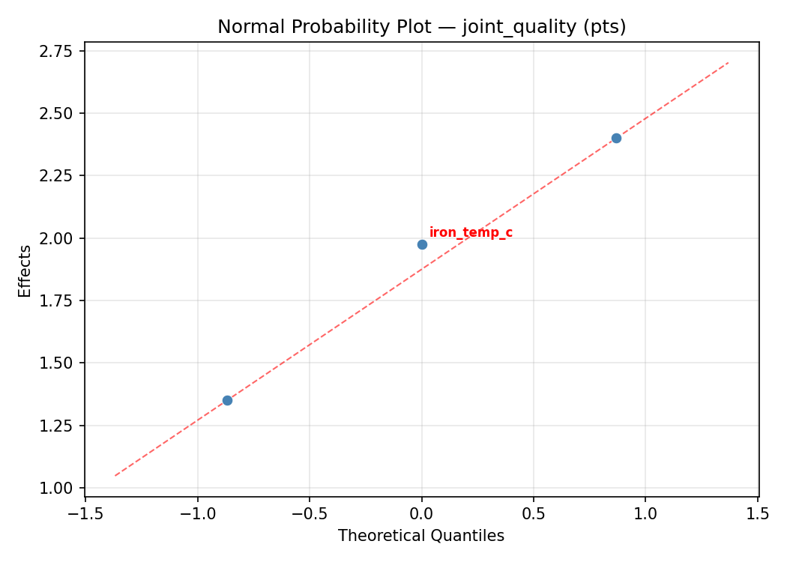
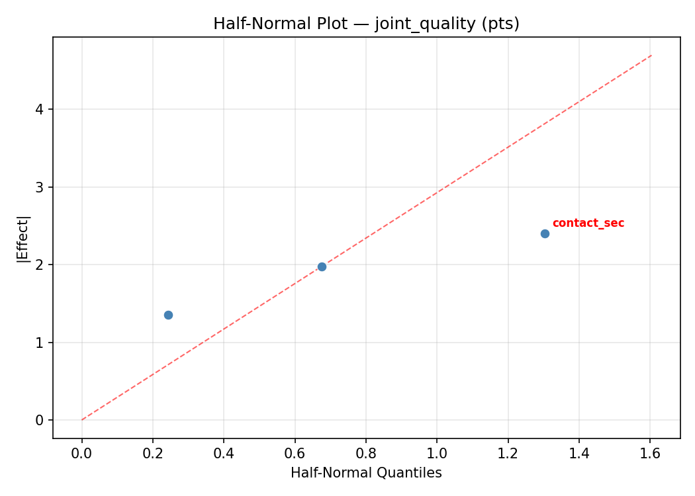
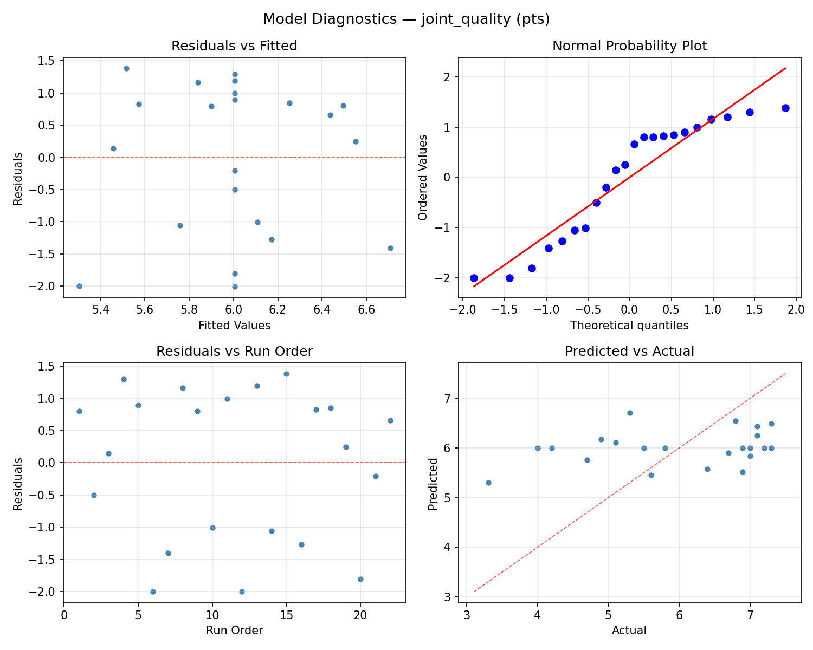
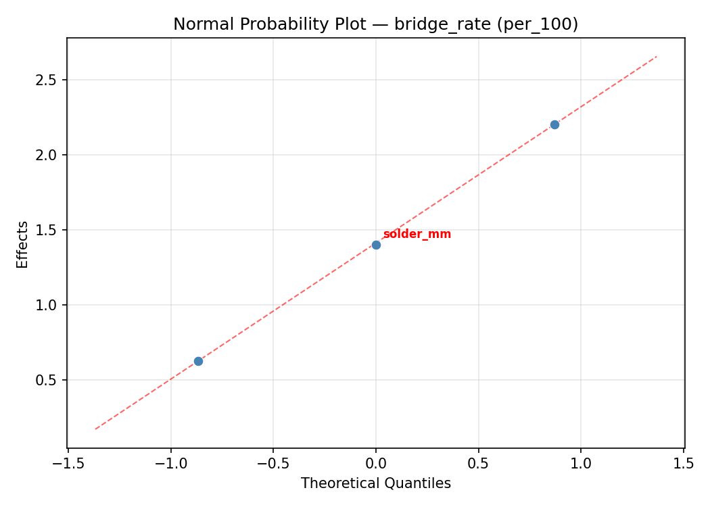
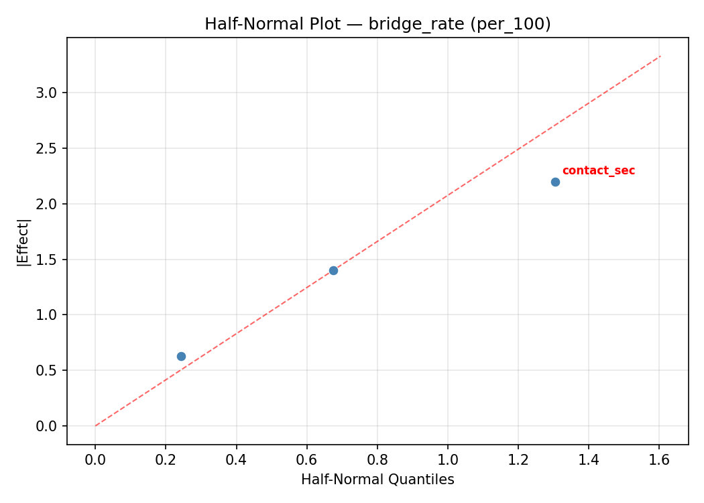
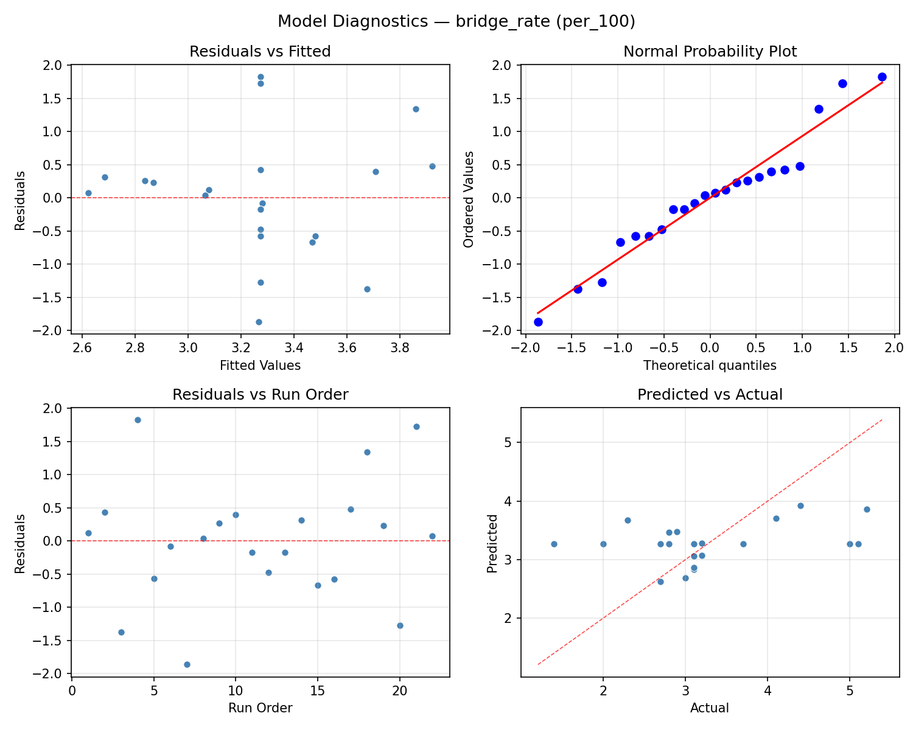

Summary
This experiment investigates pcb soldering parameters. Central composite design to maximize joint quality and minimize bridging by tuning iron temperature, contact time, and solder wire diameter.
The design varies 3 factors: iron temp c (C), ranging from 280 to 380, contact sec (sec), ranging from 1 to 5, and solder mm (mm), ranging from 0.5 to 1.2. The goal is to optimize 2 responses: joint quality (pts) (maximize) and bridge rate (per_100) (minimize). Fixed conditions held constant across all runs include flux = rosin, tip = chisel_2mm.
A Central Composite Design (CCD) was selected to fit a full quadratic response surface model, including curvature and interaction effects. With 3 factors this produces 22 runs including center points and axial (star) points that extend beyond the factorial range.
Quadratic response surface models were fitted to capture potential curvature and factor interactions. The RSM contour plots below visualize how pairs of factors jointly affect each response.
Key Findings
For joint quality, the most influential factors were solder mm (45.9%), iron temp c (35.5%), contact sec (18.6%). The best observed value was 7.3 (at iron temp c = 280, contact sec = 1, solder mm = 1.2).
For bridge rate, the most influential factors were solder mm (41.3%), contact sec (36.0%), iron temp c (22.7%). The best observed value was 1.4 (at iron temp c = 421.287, contact sec = 3, solder mm = 0.85).
Recommended Next Steps
- Run confirmation experiments at the predicted optimal settings to validate the model.
- Consider whether any fixed factors should be varied in a future study.
Experimental Setup
Factors
| Factor | Low | High | Unit |
|---|
iron_temp_c | 280 | 380 | C |
contact_sec | 1 | 5 | sec |
solder_mm | 0.5 | 1.2 | mm |
Fixed: flux = rosin, tip = chisel_2mm
Responses
| Response | Direction | Unit |
|---|
joint_quality | ↑ maximize | pts |
bridge_rate | ↓ minimize | per_100 |
Configuration
{
"metadata": {
"name": "PCB Soldering Parameters",
"description": "Central composite design to maximize joint quality and minimize bridging by tuning iron temperature, contact time, and solder wire diameter"
},
"factors": [
{
"name": "iron_temp_c",
"levels": [
"280",
"380"
],
"type": "continuous",
"unit": "C"
},
{
"name": "contact_sec",
"levels": [
"1",
"5"
],
"type": "continuous",
"unit": "sec"
},
{
"name": "solder_mm",
"levels": [
"0.5",
"1.2"
],
"type": "continuous",
"unit": "mm"
}
],
"fixed_factors": {
"flux": "rosin",
"tip": "chisel_2mm"
},
"responses": [
{
"name": "joint_quality",
"optimize": "maximize",
"unit": "pts"
},
{
"name": "bridge_rate",
"optimize": "minimize",
"unit": "per_100"
}
],
"settings": {
"operation": "central_composite",
"test_script": "use_cases/272_pcb_soldering/sim.sh"
}
}
Experimental Matrix
The Central Composite Design produces 22 runs. Each row is one experiment with specific factor settings.
| Run | iron_temp_c | contact_sec | solder_mm |
|---|
| 1 | 330 | 3 | 0.85 |
| 2 | 380 | 1 | 1.2 |
| 3 | 280 | 5 | 0.5 |
| 4 | 330 | 6.65148 | 0.85 |
| 5 | 330 | 3 | 0.85 |
| 6 | 238.713 | 3 | 0.85 |
| 7 | 330 | 3 | 0.21099 |
| 8 | 330 | 3 | 0.85 |
| 9 | 380 | 5 | 0.5 |
| 10 | 421.287 | 3 | 0.85 |
| 11 | 330 | 3 | 0.85 |
| 12 | 330 | -0.651484 | 0.85 |
| 13 | 330 | 3 | 0.85 |
| 14 | 280 | 1 | 1.2 |
| 15 | 330 | 3 | 0.85 |
| 16 | 380 | 1 | 0.5 |
| 17 | 330 | 3 | 1.48901 |
| 18 | 380 | 5 | 1.2 |
| 19 | 330 | 3 | 0.85 |
| 20 | 280 | 1 | 0.5 |
| 21 | 280 | 5 | 1.2 |
| 22 | 330 | 3 | 0.85 |
Step-by-Step Workflow
1
Preview the design
$ python doe.py info --config use_cases/272_pcb_soldering/config.json
2
Generate the runner script
$ python doe.py generate --config use_cases/272_pcb_soldering/config.json \
--output use_cases/272_pcb_soldering/results/run.sh --seed 42
3
Execute the experiments
$ bash use_cases/272_pcb_soldering/results/run.sh
4
Analyze results
$ python doe.py analyze --config use_cases/272_pcb_soldering/config.json
5
Get optimization recommendations
$ python doe.py optimize --config use_cases/272_pcb_soldering/config.json
6
Multi-objective optimization
With 2 competing responses, use --multi to find the best compromise via Derringer–Suich desirability.
$ python doe.py optimize --config use_cases/272_pcb_soldering/config.json --multi
7
Generate the HTML report
$ python doe.py report --config use_cases/272_pcb_soldering/config.json \
--output use_cases/272_pcb_soldering/results/report.html
Features Exercised
| Feature | Value |
|---|
| Design type | central_composite |
| Factor types | continuous (all 3) |
| Arg style | double-dash |
| Responses | 2 (joint_quality ↑, bridge_rate ↓) |
| Total runs | 22 |
Analysis Results
Generated from actual experiment runs using the DOE Helper Tool.
Response: joint_quality
Top factors: solder_mm (45.9%), iron_temp_c (35.5%), contact_sec (18.6%).
ANOVA
| Source | DF | SS | MS | F | p-value |
|---|
| Source | DF | SS | MS | F | p-value |
| iron_temp_c | 4 | 9.9395 | 2.4849 | 3.192 | 0.0684 |
| contact_sec | 4 | 4.4054 | 1.1013 | 1.415 | 0.3047 |
| solder_mm | 4 | 10.2729 | 2.5682 | 3.299 | 0.0632 |
| Lack | of | Fit | 2 | 1.2630 | 0.6315 |
| Pure | Error | 7 | 5.4487 | | |
| Error | 9 | 6.7117 | 0.7784 | | |
| Total | 21 | 31.3295 | 1.4919 | | |
Pareto Chart

Main Effects Plot

Normal Probability Plot of Effects

Half-Normal Plot of Effects

Model Diagnostics

Response: bridge_rate
Top factors: solder_mm (41.3%), contact_sec (36.0%), iron_temp_c (22.7%).
ANOVA
| Source | DF | SS | MS | F | p-value |
|---|
| Source | DF | SS | MS | F | p-value |
| iron_temp_c | 4 | 1.9395 | 0.4849 | 0.868 | 0.5187 |
| contact_sec | 4 | 5.8245 | 1.4561 | 2.608 | 0.1070 |
| solder_mm | 4 | 5.1595 | 1.2899 | 2.310 | 0.1366 |
| Lack | of | Fit | 2 | 2.8915 | 1.4457 |
| Pure | Error | 7 | 3.9087 | | |
| Error | 9 | 6.8002 | 0.5584 | | |
| Total | 21 | 19.7236 | 0.9392 | | |
Pareto Chart

Main Effects Plot

Normal Probability Plot of Effects

Half-Normal Plot of Effects

Model Diagnostics

Response Surface Plots
3D surfaces fitted with quadratic RSM. Red dots are observed data points.
bridge rate contact sec vs solder mm

bridge rate iron temp c vs contact sec

bridge rate iron temp c vs solder mm

joint quality contact sec vs solder mm

joint quality iron temp c vs contact sec

joint quality iron temp c vs solder mm

Multi-Objective Optimization
When responses compete, Derringer–Suich desirability finds the best compromise.
Each response is scaled to a 0–1 desirability, then combined via a weighted geometric mean.
Overall Desirability
D = 0.7918
Per-Response Desirability
| Response | Weight | Desirability | Predicted | Dir |
|---|
joint_quality |
1.5 |
|
7.10 0.9091 7.10 pts |
↑ |
bridge_rate |
1.0 |
|
2.70 0.6435 2.70 per_100 |
↓ |
Recommended Settings
| Factor | Value |
|---|
iron_temp_c | 330 C |
contact_sec | 3 sec |
solder_mm | 1.48901 mm |
Source: from observed run #22
Trade-off Summary
Sacrifice = how much worse than single-objective best.
| Response | Predicted | Best Observed | Sacrifice |
|---|
bridge_rate | 2.70 | 1.40 | +1.30 |
Top 3 Runs by Desirability
| Run | D | Factor Settings |
|---|
| #5 | 0.7678 | iron_temp_c=330, contact_sec=3, solder_mm=0.85 |
| #15 | 0.7562 | iron_temp_c=330, contact_sec=3, solder_mm=0.85 |
Model Quality
| Response | R² | Type |
|---|
bridge_rate | 0.2496 | linear |
Full Multi-Objective Output
============================================================
MULTI-OBJECTIVE OPTIMIZATION
Method: Derringer-Suich Desirability Function
============================================================
Overall desirability: D = 0.7918
Response Weight Desirability Predicted Direction
---------------------------------------------------------------------
joint_quality 1.5 0.9091 7.10 pts ↑
bridge_rate 1.0 0.6435 2.70 per_100 ↓
Recommended settings:
iron_temp_c = 330 C
contact_sec = 3 sec
solder_mm = 1.48901 mm
(from observed run #22)
Trade-off summary:
joint_quality: 7.10 (best observed: 7.30, sacrifice: +0.20)
bridge_rate: 2.70 (best observed: 1.40, sacrifice: +1.30)
Model quality:
joint_quality: R² = 0.5317 (quadratic)
bridge_rate: R² = 0.2496 (linear)
Top 3 observed runs by overall desirability:
1. Run #22 (D=0.7918): iron_temp_c=330, contact_sec=3, solder_mm=1.48901
2. Run #5 (D=0.7678): iron_temp_c=330, contact_sec=3, solder_mm=0.85
3. Run #15 (D=0.7562): iron_temp_c=330, contact_sec=3, solder_mm=0.85
Full Analysis Output
=== Main Effects: joint_quality ===
Factor Effect Std Error % Contribution
--------------------------------------------------------------
solder_mm 3.1000 0.2604 45.9%
iron_temp_c 2.4000 0.2604 35.5%
contact_sec 1.2583 0.2604 18.6%
=== ANOVA Table: joint_quality ===
Source DF SS MS F p-value
-----------------------------------------------------------------------------
iron_temp_c 4 9.9395 2.4849 3.192 0.0684
contact_sec 4 4.4054 1.1013 1.415 0.3047
solder_mm 4 10.2729 2.5682 3.299 0.0632
Lack of Fit 2 1.2630 0.6315 0.811 0.4821
Pure Error 7 5.4487 0.7784
Error 9 6.7117 0.7784
Total 21 31.3295 1.4919
=== Summary Statistics: joint_quality ===
iron_temp_c:
Level N Mean Std Min Max
------------------------------------------------------------
238.713 1 7.1000 0.0000 7.1000 7.1000
280 4 4.7000 1.5122 3.3000 6.8000
330 12 6.1000 1.0838 4.2000 7.3000
380 4 6.6500 0.7326 5.6000 7.2000
421.287 1 6.4000 0.0000 6.4000 6.4000
contact_sec:
Level N Mean Std Min Max
------------------------------------------------------------
-0.651484 1 5.3000 0.0000 5.3000 5.3000
1 4 5.3750 1.3817 4.0000 7.2000
3 12 6.3583 1.0255 4.2000 7.3000
5 4 5.9750 1.7914 3.3000 7.1000
6.65148 1 5.1000 0.0000 5.1000 5.1000
solder_mm:
Level N Mean Std Min Max
------------------------------------------------------------
0.21099 1 7.3000 0.0000 7.3000 7.3000
0.5 4 5.0000 1.6990 3.3000 7.1000
0.85 12 6.2667 0.8856 4.9000 7.3000
1.2 4 6.3500 1.1210 4.7000 7.2000
1.48901 1 4.2000 0.0000 4.2000 4.2000
=== Main Effects: bridge_rate ===
Factor Effect Std Error % Contribution
--------------------------------------------------------------
solder_mm 3.1000 0.2066 41.3%
contact_sec 2.7000 0.2066 36.0%
iron_temp_c 1.7000 0.2066 22.7%
=== ANOVA Table: bridge_rate ===
Source DF SS MS F p-value
-----------------------------------------------------------------------------
iron_temp_c 4 1.9395 0.4849 0.868 0.5187
contact_sec 4 5.8245 1.4561 2.608 0.1070
solder_mm 4 5.1595 1.2899 2.310 0.1366
Lack of Fit 2 2.8915 1.4457 2.589 0.1440
Pure Error 7 3.9087 0.5584
Error 9 6.8002 0.5584
Total 21 19.7236 0.9392
=== Summary Statistics: bridge_rate ===
iron_temp_c:
Level N Mean Std Min Max
------------------------------------------------------------
238.713 1 2.7000 0.0000 2.7000 2.7000
280 4 3.0250 0.1708 2.8000 3.2000
330 12 3.2583 1.0900 1.4000 5.1000
380 4 3.4250 1.2420 2.3000 5.2000
421.287 1 4.4000 0.0000 4.4000 4.4000
contact_sec:
Level N Mean Std Min Max
------------------------------------------------------------
-0.651484 1 1.4000 0.0000 1.4000 1.4000
1 4 2.8000 0.3559 2.3000 3.1000
3 12 3.3917 0.9681 2.0000 5.1000
5 4 3.6500 1.0344 3.1000 5.2000
6.65148 1 4.1000 0.0000 4.1000 4.1000
solder_mm:
Level N Mean Std Min Max
------------------------------------------------------------
0.21099 1 5.1000 0.0000 5.1000 5.1000
0.5 4 3.3750 1.2712 2.3000 5.2000
0.85 12 3.2583 0.9395 1.4000 5.0000
1.2 4 3.0750 0.0500 3.0000 3.1000
1.48901 1 2.0000 0.0000 2.0000 2.0000
Optimization Recommendations
=== Optimization: joint_quality ===
Direction: maximize
Best observed run: #1
iron_temp_c = 280
contact_sec = 1
solder_mm = 1.2
Value: 7.3
RSM Model (linear, R² = 0.0414, Adj R² = -0.1184):
Coefficients:
intercept +6.0045
iron_temp_c -0.0608
contact_sec -0.0199
solder_mm +0.2902
RSM Model (quadratic, R² = 0.2899, Adj R² = -0.2426):
Coefficients:
intercept +6.3453
iron_temp_c -0.0608
contact_sec -0.0199
solder_mm +0.2902
iron_temp_c*contact_sec -0.6125
iron_temp_c*solder_mm +0.2125
contact_sec*solder_mm +0.2875
iron_temp_c^2 -0.2704
contact_sec^2 -0.3304
solder_mm^2 +0.0896
Curvature analysis:
contact_sec coef=-0.3304 concave (has a maximum)
iron_temp_c coef=-0.2704 concave (has a maximum)
solder_mm coef=+0.0896 negligible curvature
Notable interactions:
iron_temp_c*contact_sec coef=-0.6125 (antagonistic)
Predicted optimum (from linear model, at observed points):
iron_temp_c = 330
contact_sec = 3
solder_mm = 1.48901
Predicted value: 6.5344
Surface optimum (via L-BFGS-B, linear model):
iron_temp_c = 280
contact_sec = 1
solder_mm = 1.2
Predicted value: 6.3755
Model quality: Weak fit — consider adding center points or using a different design.
Factor importance:
1. contact_sec (effect: 2.7, contribution: 39.0%)
2. iron_temp_c (effect: 2.6, contribution: 37.2%)
3. solder_mm (effect: 1.7, contribution: 23.8%)
=== Optimization: bridge_rate ===
Direction: minimize
Best observed run: #7
iron_temp_c = 421.287
contact_sec = 3
solder_mm = 0.85
Value: 1.4
RSM Model (linear, R² = 0.1227, Adj R² = -0.0235):
Coefficients:
intercept +3.2727
iron_temp_c -0.1497
contact_sec +0.3459
solder_mm +0.1515
RSM Model (quadratic, R² = 0.5546, Adj R² = 0.2205):
Coefficients:
intercept +3.5161
iron_temp_c -0.1497
contact_sec +0.3459
solder_mm +0.1515
iron_temp_c*contact_sec -0.2375
iron_temp_c*solder_mm -0.3875
contact_sec*solder_mm +0.1375
iron_temp_c^2 -0.5317
contact_sec^2 -0.0067
solder_mm^2 +0.1733
Curvature analysis:
iron_temp_c coef=-0.5317 concave (has a maximum)
solder_mm coef=+0.1733 convex (has a minimum)
contact_sec coef=-0.0067 negligible curvature
Notable interactions:
iron_temp_c*solder_mm coef=-0.3875 (antagonistic)
Predicted optimum (from quadratic model, at observed points):
iron_temp_c = 280
contact_sec = 5
solder_mm = 1.2
Predicted value: 4.5606
Surface optimum (via L-BFGS-B, quadratic model):
iron_temp_c = 280
contact_sec = 1
solder_mm = 0.5
Predicted value: 2.3158
Model quality: Moderate fit — use predictions directionally, not precisely.
Factor importance:
1. iron_temp_c (effect: 2.2, contribution: 42.6%)
2. solder_mm (effect: 1.7, contribution: 32.1%)
3. contact_sec (effect: 1.3, contribution: 25.3%)